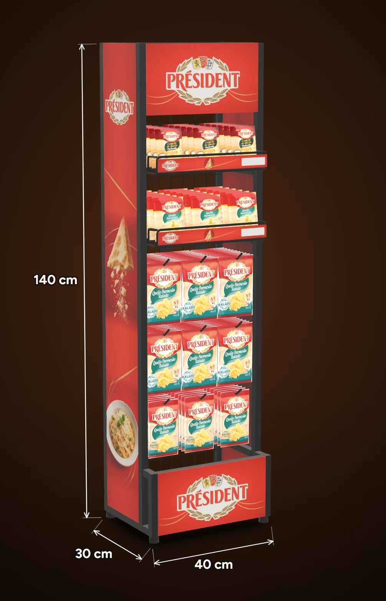
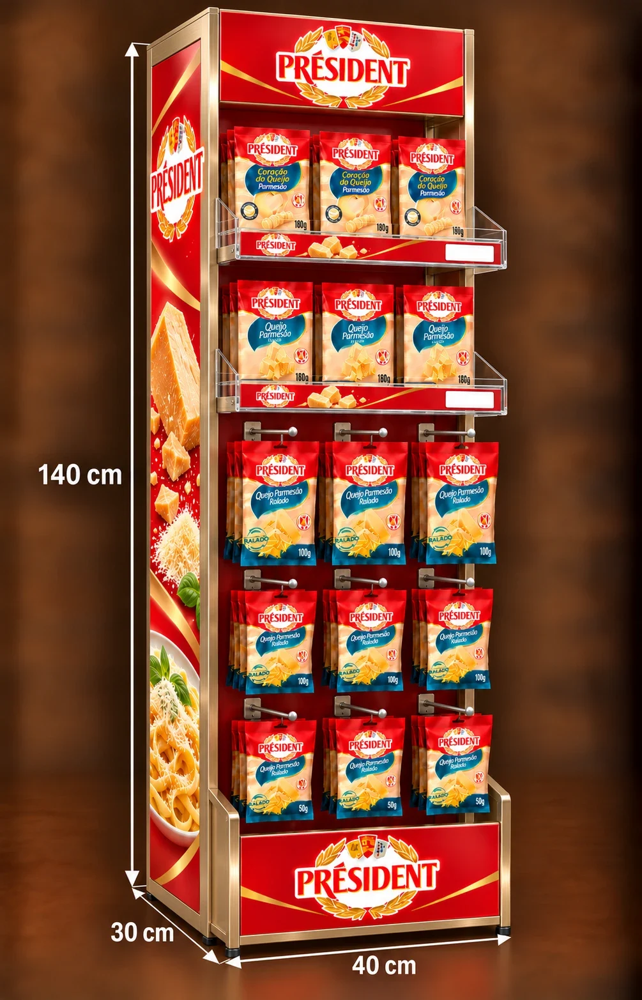
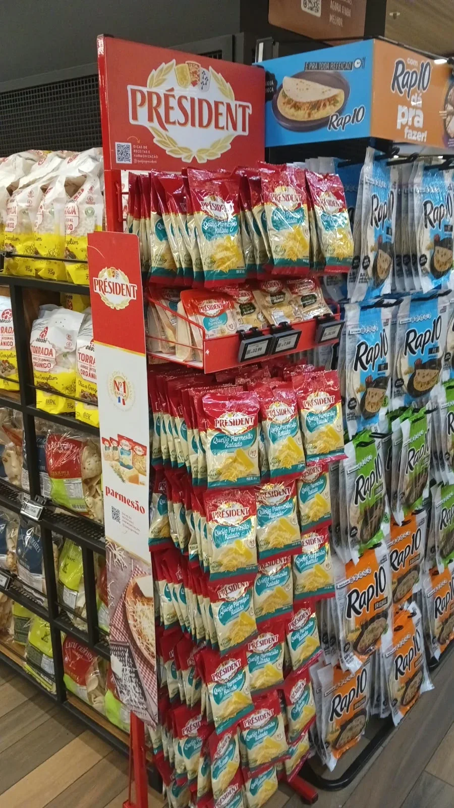

Proposta 75LAB · Lactalis / Président · Rede Festval
O novo expositor de chão em quatro versões: mais marca, mais ordem e mais valor percebido no mesmo pedaço de corredor.



1 2 3 4 5Ponto de partida · Festval hoje
O aramado vermelho cumpre a função de expor, mas não vende o parmesão como produto premium.
Em qualquer versão
As quatro versões têm a mesma planta e a mesma organização. Muda o material, e com ele o visual, a durabilidade e o peso.
Versão 01 MDF · madeira
A versão que mais conversa com o mobiliário da Festval: madeira clara, laterais em curva e testeira em arco.
Como é feitoChapa de MDF/MDP com acabamento amadeirado e bordas encapadas; testeira, rodapé e emblema em vinil impresso.
Sai o arame vermelho, entra um móvel que trata o parmesão como produto premium.
Mais pesado que o aramado; evitar contato com água na limpeza.
Versão 02 Aramado · aço
Mantém a lógica que o promotor já conhece (tela, ganchos e cestos), agora em preto, com painel lateral ilustrado e marca em destaque.
Como é feitoArame de aço com pintura eletrostática preta, fundo em tela, cestos aramados e painéis impressos na testeira, na lateral e no rodapé.
Organiza o que hoje se mistura e troca o vermelho de promoção por preto com comunicação de apetite.
Visual mais técnico: a percepção premium vem dos painéis impressos.
Versão 03 ACM · alumínio composto
Estrutura em alumínio composto com acabamento champanhe e prateleiras de acrílico cristal: o produto aparece por inteiro.
Como é feitoPainéis de ACM fresados e dobrados com acabamento champanhe, prateleiras em acrílico, pés niveladores e comunicação em adesivo impresso.
Transforma o ponto em vitrine premium, com a marca nas três alturas.
O acrílico risca com o tempo; limpar com pano macio.
Versão 04 Metalon · tubo de aço
Estrutura de tubos de aço com acabamento amadeirado e filetes dourados: o visual da madeira com a resistência do metal.
Como é feitoQuadro em metalon soldado com pintura amadeirada, prateleiras com faixa impressa, ganchos dourados e painéis de comunicação trocáveis.
Dá ao parmesão um móvel definitivo, que aguenta anos de uso sem perder o acabamento.
É a mais pesada, e a serralheria pede mais prazo de produção.
Simulação no ponto atual da Festval
Arraste a linha sobre a foto para comparar. Escolha a versão:
Arraste para comparar
Fotomontagens a partir da foto real do ponto. Produtos e embalagens ilustrativos.
Para escolher
Avaliação 75LAB de 1 a 5, comparando as quatro versões entre si.
Investimento por expositor
Próximos passos
Índice
← → avançam · M índice · F tela cheia